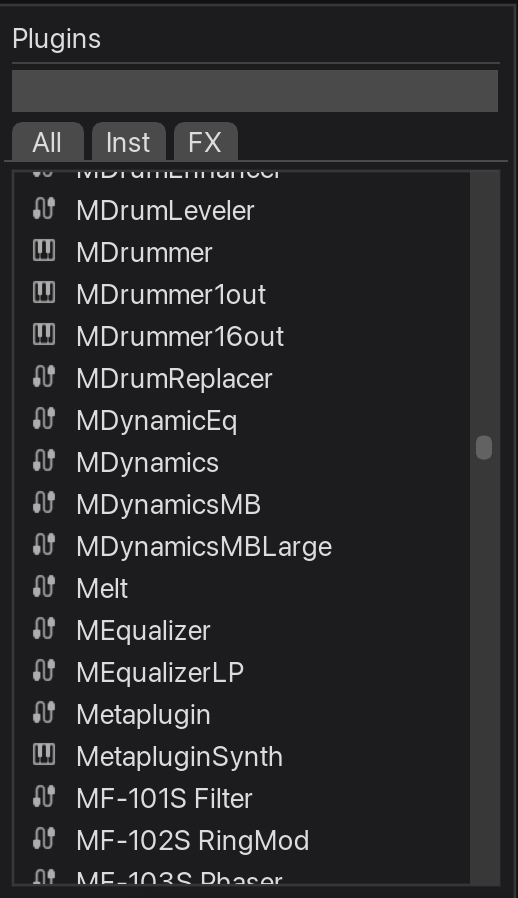
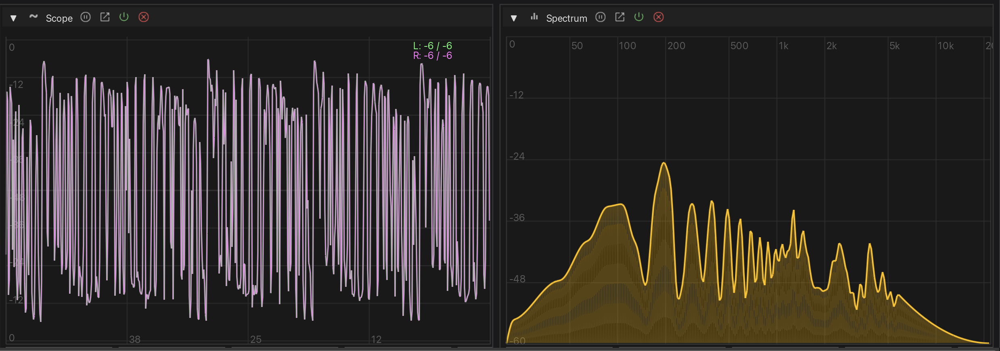
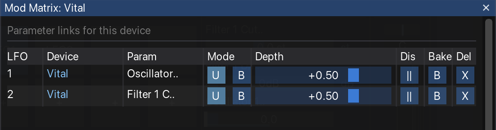

Parallel routing and modulation for REAPER 7+ — Ableton/Bitwig style
Installation
SideFX requires REAPER 7.0 or later.
Via ReaBoot (Easiest)
ReaBoot automatically installs SideFX and all its dependencies in one click.
- Go to reaboot.com
- Search for "SideFX"
- Click Install - ReaBoot handles everything
Via ReaPack (Manual)
If you already have ReaPack installed, you'll need to install SideFX and its dependencies separately.
Step 1: Install Dependencies
Go to Extensions > ReaPack > Browse packages and install each of these:
| Package | Repository | Description |
|---|---|---|
| ReaImGui | ReaTeam Extensions | ImGui bindings for REAPER UI |
| ReaWrap | Conceptual Machines | OOP wrapper library |
| RPP-Parser | ReaTeam Scripts | Required for preset save/load |
| js_ReaScriptAPI (optional) | ReaTeam Extensions | Custom preset folder selection |
Step 2: Add Conceptual Machines Repositories
- Go to Extensions > ReaPack > Import repositories...
- Paste both URLs (one per line):
https://github.com/Conceptual-Machines/ReaWrap/raw/main/index.xml https://github.com/Conceptual-Machines/SideFX/raw/main/index.xml - Click OK
Step 3: Install SideFX
- Go to Extensions > ReaPack > Browse packages
- Search for "SideFX"
- Right-click and select Install
- Restart REAPER
Running SideFX
After installation:
- Go to Actions > Show action list
- Search for "SideFX"
- Select the action and click Run
- (Optional) Assign a keyboard shortcut for quick access
How It Works
SideFX provides an Ableton/Bitwig-style interface for managing REAPER's FX chain. Understanding how it works under the hood will help you get the most out of it.
Container-Based Architecture
SideFX uses REAPER 7's Container FX as its primary building block. Every device, rack, and chain you create is actually a container with a specific naming convention:
- Devices (
D1:,D2:, etc.) - Containers wrapping individual plugins with utility controls - Bare Devices (
BD1:,BD2:, etc.) - Lightweight plugins without container wrapper - Racks (
R1,R2, etc.) - Containers for parallel processing - Chains (
C1,C2, etc.) - Containers for each parallel path within a rack - Post FX (
POST1:,POST2:, etc.) - Analyzers and metering at end of chain
This approach gives SideFX full control over the FX structure while leveraging REAPER's native container capabilities.
Device Structure (D-containers)
When you add a plugin through SideFX, it gets wrapped in a D-container with the following structure:
D1: Plugin Name (Container)
├── D1_FX: Plugin Name (your plugin)
└── D1_Util (SideFX_Utility JSFX)The utility JSFX provides additional controls like pre/post gain and routing options that appear in the device sidebar.
Bare Devices (BD-containers)
Bare devices are a lightweight alternative to full D-containers. They display the plugin directly without wrapping it in a container:
BD1: Plugin Name (the plugin itself, no container)Bare devices have these characteristics:
- No utility controls - No pre/post gain, mix, or delta controls
- No modulator support - Cannot add LFO modulators
- Simpler UI - Compact panel showing only the plugin's parameters
- Lower overhead - No container wrapper or utility JSFX
Bare devices are useful for simple plugins that don't need the extra controls, or when you want to minimize CPU overhead. Post FX (oscilloscope, spectrum analyzer) are always bare devices.
Rack Structure (R-containers)
Racks enable parallel processing by splitting audio into multiple chains:
R1 (Container)
├── SideFX_Mixer (JSFX - mixes all chains)
├── C1 (Chain container)
│ └── D1: Effect A
├── C2 (Chain container)
│ └── D2: Effect B
└── C3 (Chain container)
└── D3: Effect CAudio enters the rack, gets duplicated to each chain, processed independently, then mixed back together by the SideFX_Mixer.
JSFX Plugins
SideFX includes three custom JSFX plugins that power its features:
| Plugin | Purpose |
|---|---|
| SideFX_Utility | Added to every device. Provides pre-gain, post-gain, and the Mix (dry/wet) and Delta controls shown in the device sidebar. |
| SideFX_Mixer | Added to every rack. A 16-channel mixer that combines parallel chains with individual volume, pan, mute, and solo controls per chain. |
| SideFX_Modulator | The LFO engine. Contains the actual modulation logic including rate, curve interpolation, tempo sync, and parameter output. See the Modulators section for details. |
SideFX as Your FX Manager
SideFX is designed to be the primary interface for managing your track's effects. When you use SideFX, it takes ownership of the FX chain structure.
What You Can Safely Do in REAPER
- Adjust plugin parameters (they sync with SideFX)
- Open plugin UIs from REAPER's FX window
- Add automation to parameters
- Copy/paste entire tracks
What to Avoid
- Renaming containers created by SideFX
- Moving FX in/out of SideFX containers manually
- Deleting individual items from within containers
- Adding FX directly inside SideFX containers
Quick Start
Get up and running with SideFX in minutes.

1. Open SideFX
Run the SideFX action from REAPER's action list, or assign it to a keyboard shortcut.
2. Select a Track
SideFX operates on the currently selected track. Select a track in REAPER's arrange view or mixer.
3. Add Plugins
Use the plugin browser on the left to find and add plugins. Double-click a plugin or drag it onto the device chain.
4. Create a Rack
Click + Rack to create a parallel processing rack. Add devices to each chain for parallel effects.
5. Add Modulation
Expand a device panel and use the modulator section to add LFO modulation to any parameter.
Plugin Browser
The plugin browser on the left side of SideFX lets you find and add plugins to your device chain.
Searching Plugins
- Search box - Type to filter plugins by name or manufacturer
- Type filter - Filter by plugin type (Instruments, Effects, JSFX, etc.)
- Results update as you type
Adding Plugins
- Double-click a plugin to add it at the end of the chain
- Drag and drop to add at a specific position
- Add as Bare - Hold Shift while adding to create a bare device (no utility controls or modulator support)
- Add as Post FX - Drop onto the Post FX area (right edge) to add as a post-chain analyzer/meter
Selecting Parameters
Right-click a device header and select Select Parameters to choose which parameters appear in the device panel. The parameter selector dialog lets you:
- Check/uncheck parameters to show or hide them
- Set unit overrides (dB, Hz, ms, %, etc.) for each parameter
- Search parameters by name
Devices
Devices are the building blocks of your FX chain. Each device wraps a plugin in a container with additional controls.
Device Controls
Each device panel shows:
- Header - Device name (click to rename), enable/disable toggle
- Parameters - Configurable parameter sliders
- Sidebar - Mix (dry/wet), Delta (difference mode)
Device Context Menu
Right-click a device header for options:
- Rename - Change the device display name
- Select Parameters - Configure visible parameters
- Open Plugin UI - Show the plugin's native interface
- Delete - Remove the device
Post FX
The Post FX area sits at the end of your device chain, after all your main effects and racks. It's designed for analysis tools and final-stage processing that should always come last in the signal flow.

What is Post FX?
Post FX is a dedicated section that appears to the right of your main device chain. Unlike regular devices:
- Always at the end - Post FX devices stay after your main chain, regardless of how you reorder other devices
- Bare devices - Post FX plugins are added without the D-container wrapper (no utility controls or modulator support)
- Named with POST prefix - Post FX devices use
POST1:,POST2:naming to distinguish them from main chain devices
Adding Post FX
Drag a plugin from the browser and drop it on the Post FX area (the bordered region at the right edge of the chain). The plugin will be added as a bare device with the POST prefix.
Analyzers
SideFX includes built-in audio analysis tools that live in the Post FX area.
Available Analyzers
| Analyzer | Description |
|---|---|
| Oscilloscope | Stereo waveform display with logarithmic dB scale. Shows left channel (green) and right channel (magenta). |
| Spectrum | Frequency response analyzer with logarithmic frequency scale (20Hz-20kHz). |
Adding Analyzers
Click the Scope or  Spectrum button in the toolbar to add an analyzer. Analyzers appear in the Post FX area at the end of your device chain.
Spectrum button in the toolbar to add an analyzer. Analyzers appear in the Post FX area at the end of your device chain.
Analyzer Controls
Each analyzer panel provides these controls in the header:
- Collapse/Expand (▼/▶) - Toggle between full view and compact strip
- Freeze - Pause the display to inspect a moment in time
- Popout - Open the analyzer in a separate resizable window
- Power - Enable or bypass the analyzer
- Delete (X) - Remove the analyzer from the chain
Collapsed View
When collapsed, analyzers display as a narrow vertical strip showing only the essential controls: expand button, popout, power, and delete. This saves screen space while keeping analyzers accessible.
Popout Windows
Click the popout button to open an analyzer in its own resizable window. This is useful for larger displays or when you want to keep the analyzer visible while working on other parts of your chain. The inline panel hides when popped out.
Bypass Behavior
When an analyzer is bypassed (power off), the visualization area shows only the grid and labels — the actual waveform or spectrum data is cleared. This provides a clear visual indication that the analyzer is inactive while maintaining the panel structure.
Racks & Chains
Racks enable parallel processing with multiple chains that can be mixed together.
Creating a Rack
- Click the Rack button in the toolbar (or drag it to a specific position)
- A new rack appears with one empty chain
- Drag plugins from the browser into the chain
Adding Chains
Click the + button at the bottom of a rack to add a new chain. Each chain processes audio in parallel.
Chain Mixer
Each rack has a built-in mixer with per-chain controls:
- Volume - Chain output level
- Pan - Stereo position
- Mute/Solo - Isolate chains for mixing
Converting Chains to Devices
Right-click a chain header and select Convert to Devices to extract the chain's contents back to the main device chain.
Modulators
Modulators add movement to your sound by automatically varying parameter values over time.
How Modulators Work
Each modulator is powered by the SideFX_Modulator JSFX plugin. The JSFX handles all the real-time modulation logic:
- LFO generation - Produces the oscillating signal based on rate and curve shape
- Tempo sync - Locks to REAPER's tempo when sync is enabled
- Curve interpolation - Reads the bezier curve data and generates smooth output
- Parameter output - Outputs a 0-1 signal that REAPER's parameter linking system uses
SideFX's UI controls the JSFX parameters and uses REAPER's native parameter linking (plink) system to connect the modulator output to your target parameters. This means modulation happens at the audio engine level, not in the script.
Adding a Modulator
- Expand a device panel
- In the modulator section, click + Mod
- A new LFO modulator appears
Linking Parameters
To link a parameter to a modulator:
- Add a modulator to the device
- Right-click any parameter slider in the device
- Select Link to LFO 1 (or LFO 2, etc.)
- The parameter will now be modulated by the LFO
Modifier keys when linking:
- Ctrl + right-click: Link in bipolar mode (modulates above and below the current value)
- Alt + right-click: Link with negative depth (inverted modulation)
- Ctrl + Alt + right-click: Both bipolar and negative
Modulator Controls
| Control | Description |
|---|---|
| Rate | LFO speed in Hz (when in Free mode) |
| Free/Sync | Toggle between free-running Hz rate or tempo-synced divisions |
| Sync Rate | Tempo-synced rate (1/4, 1/8, 1/16, etc.) when Sync is enabled |
| Trigger | LFO restart mode: Free (continuous), Transport (restart on play), MIDI (restart on note), Audio (restart on transient). Click to expand advanced settings for MIDI/Audio trigger configuration. |
| Loop/One-shot | Toggle between looping LFO or single envelope playback |
| Phase | LFO starting position (0-360°) |
| Curve | LFO shape display (click to open curve editor) |
Curve Editor
Click the curve display to open the curve editor. Create custom LFO shapes by adding and moving control points. Use bezier handles for smooth curves.
Mod Matrix
The Mod Matrix provides a unified view of all parameter links within a device, making it easy to manage multiple modulation assignments at once.
Opening the Mod Matrix
Click the  matrix button in the modulator header to open the Mod Matrix dialog for that device. The dialog shows all parameter links from all modulators in the device.
matrix button in the modulator header to open the Mod Matrix dialog for that device. The dialog shows all parameter links from all modulators in the device.
Matrix Columns
| Column | Description |
|---|---|
| LFO | Which modulator (LFO 1, 2, etc.) controls this link |
| Device | The target device name |
| Param | The linked parameter name |
| Mode | U (Unipolar: 0 to +depth) or B (Bipolar: -depth to +depth) |
| Depth | Modulation amount slider (-1 to +1) |
| Dis | Disable/enable the link without removing it |
| Bake | Bake this link to automation |
| Del | Remove the parameter link |
Disabling vs Removing Links
Use the Dis button to temporarily disable a link while preserving its depth setting. This is useful for A/B comparisons. The Del button permanently removes the link.
Baking Automation
Convert modulator movements into REAPER automation envelopes for precise editing or to free up CPU.
How to Bake
- Set up your modulator and parameter link
- Click the Bake button on the modulator
- Choose a range (project, track, time selection, or selected items)
- Click Bake to create the automation
Range Modes
| Mode | Description |
|---|---|
| Project | Entire project length |
| Track | From first to last item on track |
| Time Selection | Current time selection |
| Selected Items | Duration of selected items |
Bake Settings
Configure baking behavior in Settings:
- Disable link after bake - Automatically unlink the parameter after baking
- Default range mode - Pre-select your preferred range
- Show range picker - Skip the dialog and use defaults
Presets
Save and load your entire FX chain configuration, including all devices, racks, modulators, and parameter links.
Saving a Preset
- Click the save button in the toolbar
- Enter a name for your preset
- Click Save
Presets are saved to a SideFX/chains/ folder in your REAPER resources directory. Each preset consists of:
- An
.RfxChainfile (REAPER-compatible FX chain) - A
.sidefx.jsonfile (SideFX metadata: display names, parameter selections, modulator links)
Loading a Preset
- Click the save button in the toolbar
- Select a preset from the list
- Click Load
What Gets Saved
- All devices, racks, and chains
- Plugin settings and parameter values
- Custom device display names
- Parameter visibility selections
- Modulator configurations and parameter links
Settings
Click the  gear button in the toolbar to access settings.
gear button in the toolbar to access settings.
Display
- Show track name - Display current track in toolbar
- Show breadcrumbs - Navigation path when inside containers
- Show Mix/Delta controls - Sidebar wet/dry and delta controls
- Show phase controls - Phase slider in modulator panel
Parameters
- Max visible parameters - Limit parameters shown per device (default: 32)
Bake
- Disable link after bake - Auto-disable parameter link after baking
- Default range mode - Default range for bake dialog
- Show range picker modal - Show range selection dialog
Keyboard Shortcuts
| Shortcut | Action |
|---|---|
| Shift + drag | Fine control on sliders |
| Double-click slider | Reset to default value |
| Double-click plugin | Add plugin to chain |
| Right-click device | Open context menu |
Troubleshooting
Cannot dock window in fresh REAPER install
On a fresh REAPER installation with no docked windows, SideFX may not dock into REAPER's docker. This is a REAPER/ReaImGui limitation where the docker needs to be "activated" first.
Workaround: Dock any native REAPER window (e.g., Actions, Mixer) first, then SideFX will be able to dock.
Multiple Serum instances don't receive MIDI
When using multiple Serum (or Serum 2) instances on the same track, only the first instance receives MIDI by default. This is because REAPER's VST instruments default to "Replace MIDI bus" mode instead of "Merge with MIDI bus".
Workaround: For each additional Serum instance:
- Open the FX window for the Serum plugin (double-click the device header)
- Click the I/O button (routing)
- Under MIDI Output, select "Merges with MIDI bus"